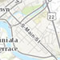
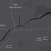
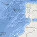
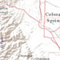
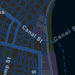
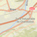

The Map class contains properties and methods for storing, managing, and overlaying layers common to both 2D and 3D viewing. Layers can be added and removed from the map, but are rendered via a MapView (for viewing data in 2D) or a SceneView (for viewing data in 3D). Thus a map instance is a simple container that holds the layers, while the View is the means of displaying and interacting with a map's layers and basemap.
A single map may be referenced by multiple views. This sample for example, contains a single Map that is visible in two separate views - one in 2D and the other in 3D. Because one map may be accessed by multiple views in the same application, all user interaction with a map's layers is handled on the View, not the Map.
An instance of Map is an essential component of the MapView and SceneView. A Map object should be created prior to a view so it can be passed into the map property of that view (e.g. MapView.map, SceneView.map).
// Load the Map and MapView modules
require(["esri/Map", "esri/views/MapView", "dojo/domReady!"], function(Map, MapView) {
// Create a Map instance
var myMap = new Map({
basemap: 'streets'
});
// Create a MapView instance (for 2D viewing) and reference the map instance
var view = new MapView({
map: myMap
});
});
Constructors
new Map(properties)
properties Object See the properties for a list of all the properties that may be passed into the constructor. |
// Typical usage
var map = new Map({
basemap: "topo"
});Property Overview
| Name | Type | Summary | |
|---|---|---|---|
| Collection | A flat collection of all the layers in the map. more details | more details | |
| Basemap | Specifies a basemap for the map. more details | more details | |
| String | The name of the class. more details | more details | |
| Ground | Specifies the surface properties for the map. more details | more details | |
| Collection | A collection of operational layers. more details | more details | |
Property Details
allLayersCollectionreadonly
A flat collection of all the layers in the map. This collection contains basemap layers, operational layers and ground layers. Group Layers and their children layers are also part of this collection. Reference layers in the basemap will always be included at the end of the collection.
Layers should not be added directly to this collection. They must only be added via the layers, basemap or ground properties.
Example:// Find a layer with title "US Counties" var foundLayer = map.allLayers.find(function(layer) { return layer.title === "US Counties"; }); // Create a filtered collection of the non-group layers var nonGroupLayers = map.allLayers.filter(function(layer) { return !foundLayer.layers; }); // Listen for any layer being added or removed in the Map map.allLayers.on("change", function(event) { console.log("Layer added: ", event.added); console.log("Layer removed: ", event.removed); console.log("Layer moved: ", event.moved); });Specifies a basemap for the map. The basemap is a set of tile layers that give geographic context to the MapView or SceneView and the other operational layers in the map.
This value can be an instance of Basemap or one of the strings listed in the table below.
Value Description streets 
satellite 
hybrid 
topo  gray 
dark-gray  oceans  national-geographic 
terrain  osm 
dark-gray-vector gray-vector streets-vector topo-vector streets-night-vector  streets-relief-vector  streets-navigation-vector  Example:
Example:// Set the basemap in the constructor var map = new Map({ basemap: "streets" }); // Set the basemap after the map instance is created map.basemap = "topo";declaredClassStringreadonly
The name of the class. The declared class name is formatted as
esri.folder.className.Specifies the surface properties for the map. This property is only relevant when adding the map to a 3D SceneView. It renders the terrain or topographical variations in the real world on the map's surface with a collection of ElevationLayer.
This value can be an instance of Ground, or the string
world-elevationfor a default instance of ground using the World Elevation Service.- See also:
Examples:// Use the world elevation service var map = new Map({ basemap: "topo", ground: "world-elevation" });// Create a map with the world elevation layer overlaid by a custom elevation layer var worldElevation = ElevationLayer({ url: "//elevation3d.arcgis.com/arcgis/rest/services/WorldElevation3D/Terrain3D/ImageServer" }); var customElevation = ElevationLayer({ url: "http://my.server.com/arcgis/rest/service/MyElevationService/ImageServer" }); var map = new Map({ basemap: "topo", ground: new Ground({ layers: [ worldElevation, customElevation ] }) });layersCollection autocast
A collection of operational layers. This property only contains interactive operational layers, such as FeatureLayers, WebTileLayers and GraphicsLayers that may be queried, assigned different renderers, analyzed, etc. It does not include basemaps.
A layer is a collection of one or more features, or graphics, that represent real-world phenomena. Each feature contains a symbol and geographic data that allows it to be rendered on the map as a graphic with spatial context. Features within the layer may also contain data attributes that provide additional information that may be viewed in popup windows and used for rendering the layer.
Layers may be added in the constructor, with the add() or addMany() methods, or directly to the layers collection using add() or addMany().
A layer may only be added to one parent. Adding the same layer to multiple Maps or GroupLayers is not possible. If you attempt to do so, the layer will automatically be removed from its current parent and placed in the new parent.
var layer = new GraphicsLayer(); // The layer belongs to map1 map1.layers.add(layer); // The layer now belongs to map2 // and implicitly does: map1.layers.remove(layer) map2.layers.add(layer);Example:// Add layers in the constructor of Map using an array var fl = new FeatureLayer(url); var gl = new GraphicsLayer(); var map = new Map({ layers: [fl, gl] }); // Add layers using add() map.addMany([fl, gl]); // Add layers using layers collection map.layers.addMany([fl, gl]);
Method Overview
| Name | Return Type | Summary | |
|---|---|---|---|
Adds a layer to the layers collection. more details | more details | ||
Adds a layer or an array of layers to the layers collection. more details | more details | ||
| Layer | Returns a layer based on the given layer id. more details | more details | |
| Layer | Removes the specified layer from the layers collection. more details | more details | |
| Layer[] | Removes all layers. more details | more details | |
| Layer[] | Removes the specified layers. more details | more details | |
| Layer | Changes the layer order. more details | more details | |
Method Details
add(layers, index)
Adds a layer to the layers collection.
Parameters:layers LayerLayer to be added to the layers collection.
optionalindex NumberA layer can be added at a specified index in the layers collection. If no index is specified or the index specified is greater than the current number of layers, the layer is automatically appended to the list of layers in the layers collection and the index is normalized.
addMany(layers, index)
Adds a layer or an array of layers to the layers collection.
Parameters:layers Layer[]Layer(s) to be added to the layers collection.
optionalindex NumberA layer can be added at a specified index in the layers collection. If no index is specified or the index specified is greater than the current number of layers, the layer is automatically appended to the list of layers in the layers collection and the index is normalized.
findLayerById(layerId){Layer}
Returns a layer based on the given layer id.
Parameter:layerId StringThe ID assigned to the layer.
Returns:Type Description Layer Returns the requested layer object. remove(layer){Layer}
Removes the specified layer from the layers collection.
Parameter:layer LayerLayer to remove from the layers collection.
Returns:Type Description Layer Returns the layer removed from the layers collection. removeAll(){Layer[]}
Removes all layers.
Returns:Type Description Layer[] Returns the layers removed from the layers collection. removeMany(layers){Layer[]}
Removes the specified layers.
Parameter:layers Layer[]Array of layers to remove from the layers collection.
Returns:Type Description Layer[] Returns the layers removed from the layers collection. reorder(layer, index){Layer}
Changes the layer order. The first layer added is always the base layer, even if its order is changed.
Parameters:layer LayerThe layer to be moved.
index NumberThe index location for placing the layer. The bottom-most layer has an index of
0.Returns:Type Description Layer Returns the layer that was moved.